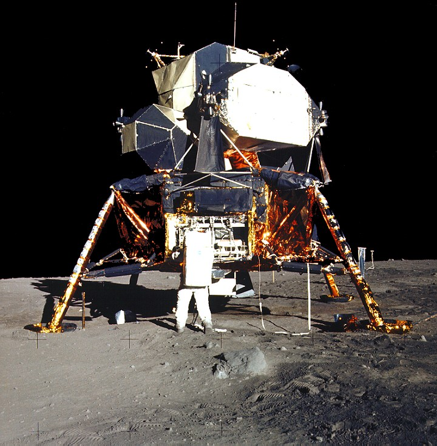
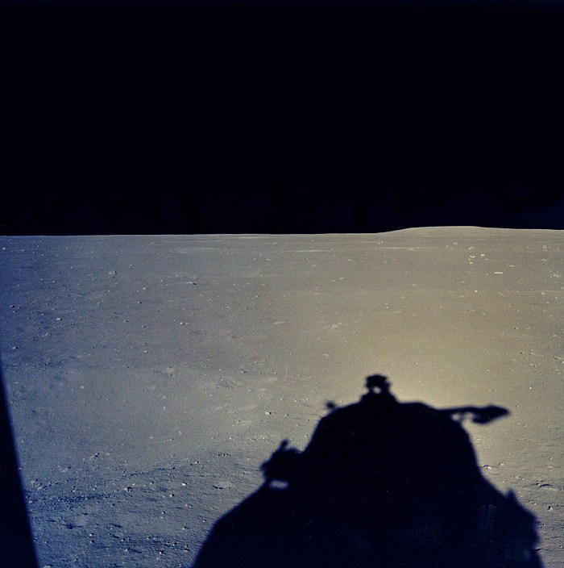

SEA OF TRANQUILITY · 1969
A fragile machine. An airless world.Follow a crew of two to the lunar surface.
One-sixth the gravity. No atmosphere.Every metre, every burn, every grain of dust.
BRAKING APPROACH
Guidance is flying. You have the view.
THE FLIGHT, IN CONTEXT
This simulation follows an Apollo-style, two-person lunar module through its final 1,000 metres. Automatic guidance controls the descent. Pause, change cameras, or move along the timeline to inspect any moment.


The spacecraft uses NASA / Michael D. Carbajal’s Apollo lunar module geometry, with adapted metal and thermal-blanket materials. Apollo photographs guide the low Sun, hard shadows, dark sky, small craters, and scattered stones. The two crew members stay inside the cabin.
Lunar gravity is 1.625 m/s². Engine thrust changes with guidance and vehicle mass decreases as propellant is consumed. Contact probes trigger engine cutoff just above the ground; the landing gear absorbs the final drop.
In vacuum, dust travels in shallow ballistic arcs. The fast sheet leaves the landing area; a smaller, slower population falls back over several seconds. There are no floating smoke clouds. The faint engine plume is enhanced for visibility; actual exhaust can be difficult to see in sunlight. There is no exterior sound.
An interpretive visualization, not a flight-certified simulator or a replay of Apollo 11 telemetry. Terrain is procedural, the coordinates identify the historical setting, and the guidance, gear response, exhaust, and dust population are approximations. A surface camera at 1 km tracks a tiny distant spacecraft; use Tracking for a close view.
Drag to orbit in Tracking or Wide; scroll or pinch to zoom. Space: play/pause. 1–4: cameras. R: restart. H: hide instruments. Playback pauses when this tab is hidden. Reduced-motion preferences start with a still preview.
FLIGHT DISPLAY UNAVAILABLE
This experience needs WebGL 2 and its local assets served over HTTP. Enable hardware acceleration, then reload to try again.